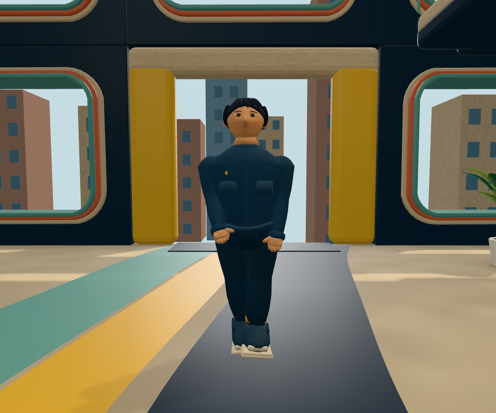
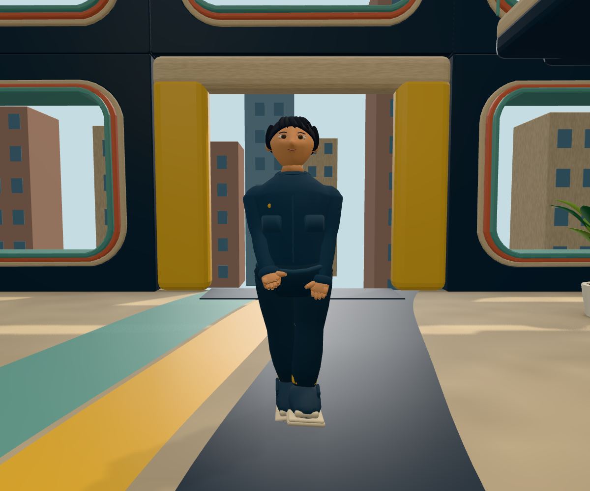

人物比例与面部 · 运行对照
左：提交 8881fd8 的玩家 GLB。右：本轮肩颈、衣身体积与眼睑曲面调整后的玩家 GLB。同一运行场景、镜头与画幅，保留真实待机和眨眼，动作相位不一致。此处检查人物表面响应，不是参考图校准，也不代表美术验收通过。
正常距离

修改前
修改后正面
侧面
四分之三角度
仍需处理：鼻部正面体积偏弱、眼睑近景边缘、发束形态、颈部与衣领造型，以及完整表情和衣物变形。相机参数与资产 SHA-256 见 cameras.json。